Hardware & embedded systems
Where a circuit starts responding: sensors, firmware, and devices that turn the physical world into useful information.
Hi, I’m Amir, a ambitious Computer Engineering student turning curiosity into working systems.
I’m fascinated by how electronics, software, machines, and control systems work together. As a Computer Engineering student, I’m learning to connect those disciplines through embedded systems, robotics, and applications that solve practical problems and make everyday work easier.
I’m drawn to reverse engineering: understanding existing designs and finding ways to improve them. Cybersecurity pushes me to examine how systems can fail and how to protect them, while robotics connects that understanding to machines that sense, move, and respond.
I like to study a problem in depth, test my assumptions, and refine what I build. My ambition is to grow into an engineer who can carry an idea from a careful investigation to a reliable, useful solution.
WHAT I’M INTERESTED IN
Where a circuit starts responding: sensors, firmware, and devices that turn the physical world into useful information.
Turning an idea into a tool people can use, from a clear interface to the logic and data behind it.
The moment code becomes motion. I’m interested in how mechanisms, feedback, and planning make machines move with purpose.
Looking for the assumptions a system depends on, how they can fail, and what it takes to protect them.
Working backward from behavior to design, uncovering the decisions inside existing hardware and software, and learning what could work better.
IDEAS, PUT INTO ACTION
Projects across hardware, software, and the connections between them.
Turning a physical measurement into a connected sales workflow.
A connected fruit scale built around an ESP32 controller, a load cell, and an ESP32-CAM. The scale coordinates image identification through a Rust and Gemini API, computes the price from measured weight, and records confirmed sales in Firebase.
The hardware side of a connected research system. FruityVens imports its sale records, sends updated prices back, and provides the sales analytics and forecasting interface.
The scale controls when the camera captures an image. A Rust API returns a normalized fruit label, including named mango varieties, and the scale displays fruit, weight, and price on its LCD.
Five-point load-cell calibration and filtered measurements support the weighing workflow. ESP-NOW carries commands, detection results, sale acknowledgements, and price updates between boards.
Sales can upload directly or through a dedicated ESP32 Firebase worker. Cloud price updates flow back to the scale, connecting its physical workflow to FruityVens.
Bearer-token authentication protects the fruit-identification API. The camera sends its request to the Rust backend, which keeps Gemini credentials on the server.
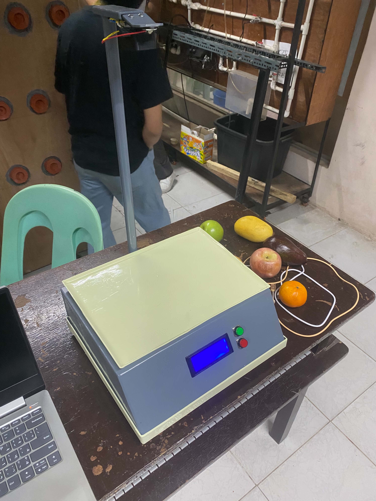
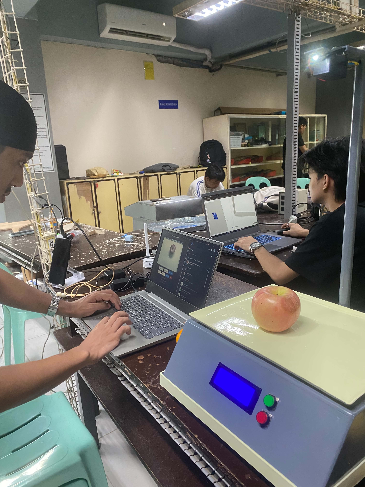
ESP32 · ESP32-CAM · C++ · NAU7802 · ESP-NOW · Rust · Gemini · Firebase
The companion app that makes scale data useful to a vendor.
A Flutter companion app for fruit inventory, sales analytics, and AI-driven sales forecasting. Its Python service uses gradient boosting regression to estimate seven-day demand from sales history, while SQLite and Firebase keep the vendor’s records available offline and synchronized with the scale.
The software companion to the computer-vision weighing scale. Automated measurements come from the hardware; inventory, reporting, and forecasting live in the app and its Python service. The app also supports manual and offline workflows.
Imports sale logs from the connected scale through Firebase, normalizes weights and prices, and derives stable identifiers to prevent duplicate imports. Price changes can be published back to the scale.
Supports inventory management, transaction history, revenue summaries, and PDF reports, with local storage for offline workflows.
A Python service uses scikit-learn’s GradientBoostingRegressor to forecast seven-day fruit demand from transaction history. When there is too little training data, it falls back to estimates based on recent sales rates.
Firebase email/password and Google sign-in handle account access. Biometric or PIN unlock controls local app access. Separate owner and worker workflows let workers request sale changes for an owner to review and approve.
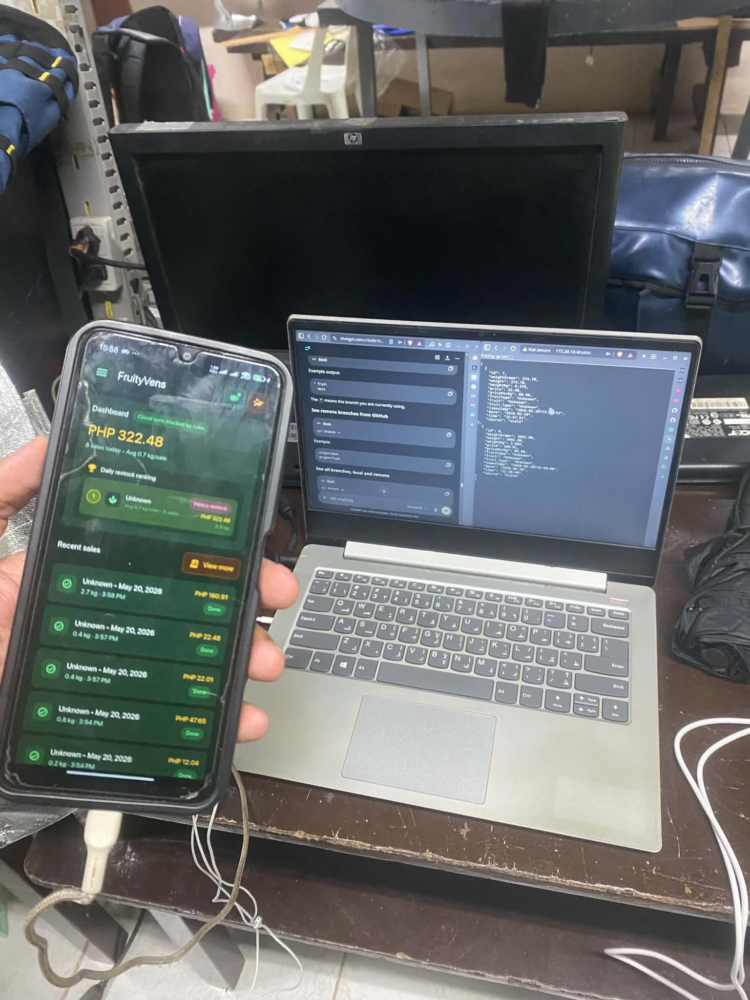
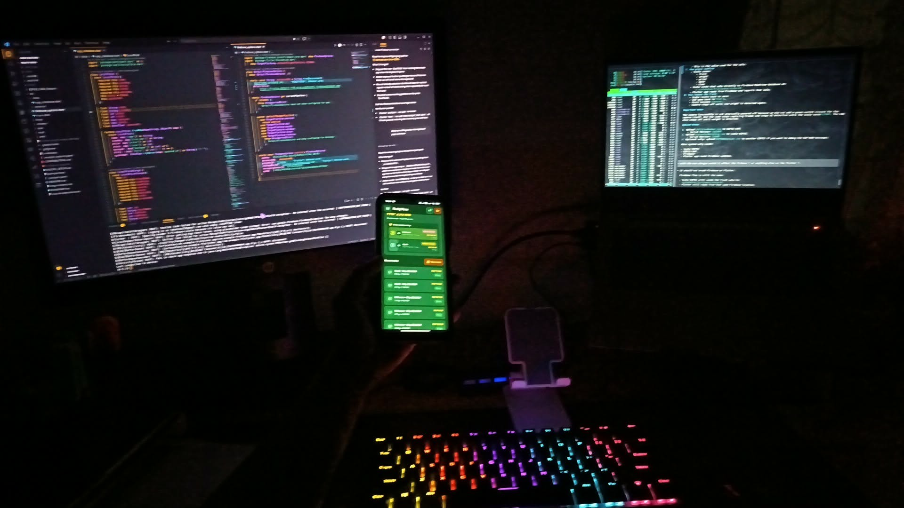
Flutter · Dart · SQLite · Firebase · Python · FastAPI · scikit-learn
Learning how coordinated motion becomes repeatable behavior.
Arduino firmware for sequencing a robotic arm with six servos and a stepper motor. It coordinates joint movement, mirrored base motion, and actuator timing through repeatable movement sequences.
Controls the base, shoulder, elbow, wrist, and gripper through a repeatable movement sequence.
Uses configurable joint travel ranges and gradual servo positioning, including a paired base-servo arrangement.
Configures the stepper's maximum speed, acceleration, and target position for controlled movement and return.
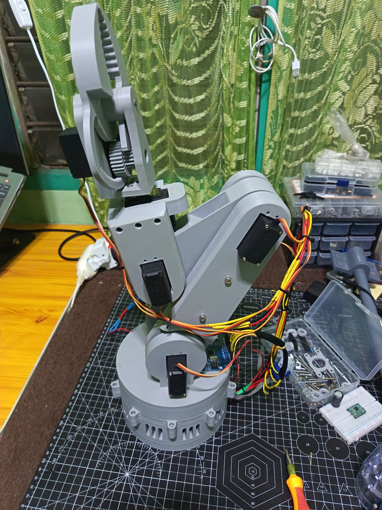
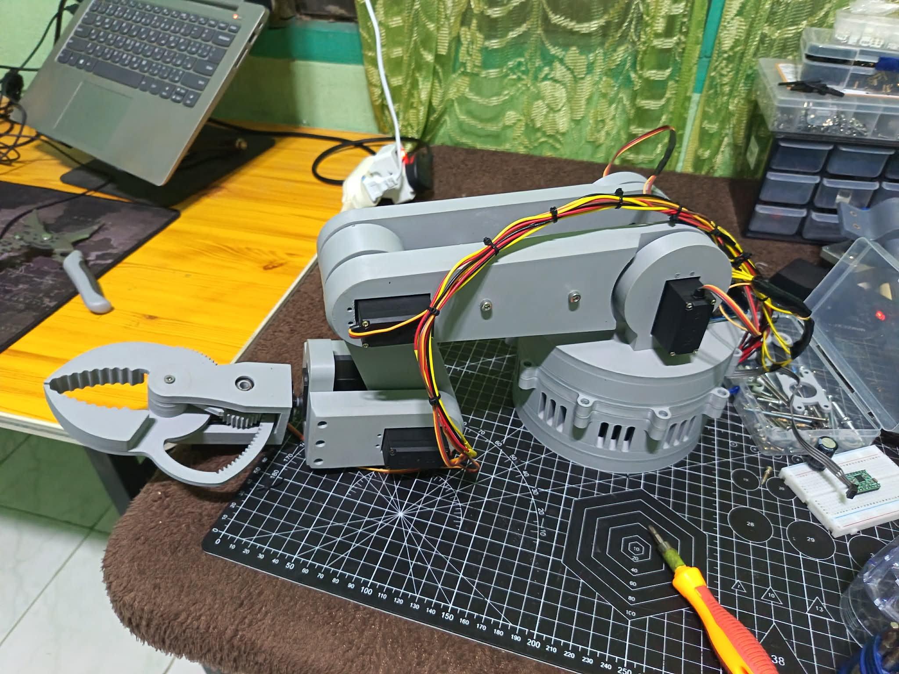
Arduino · C++ · Servo · AccelStepper
Making basketball sessions easier to organize.
A basketball session management platform that brings player registration, join requests, queues, and payment tracking into one workflow. Owners can organize sessions while players request a place through a shared link.
Manages session queues, owner approval of join requests, player fees, and payment status.
Keeps member attendance and payment histories, with dashboard totals and CSV downloads for bookkeeping.
Separates the Vue interface from a Python FastAPI backend and MongoDB persistence.
The backend uses JWT authentication, bcrypt password hashing, and request rate limits. The project includes 56 automated API tests covering authentication and club workflows.
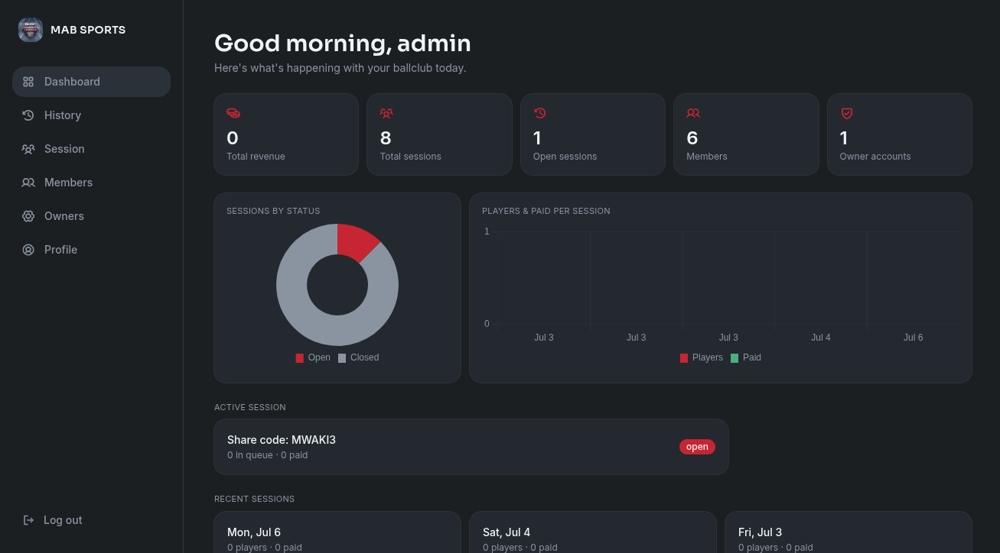
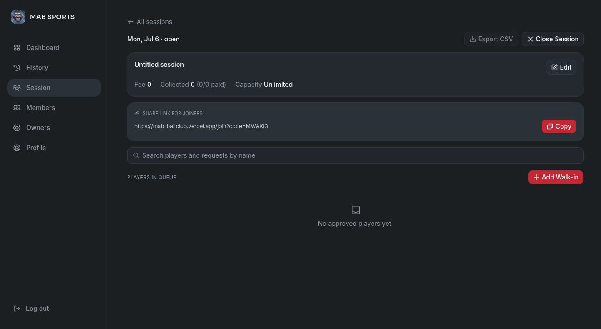
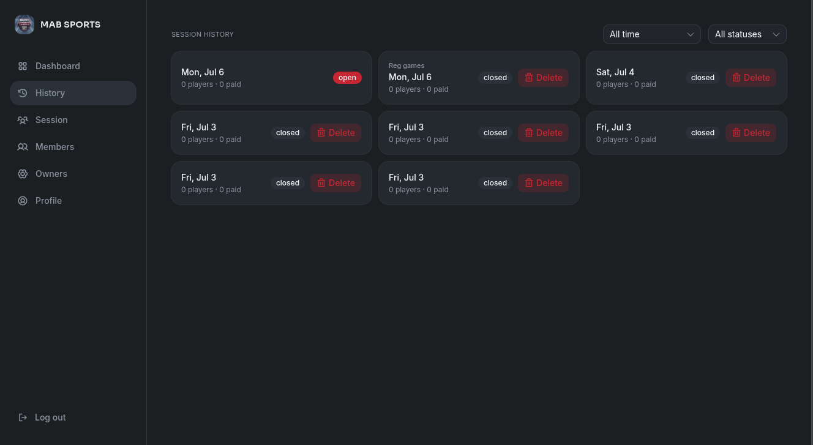
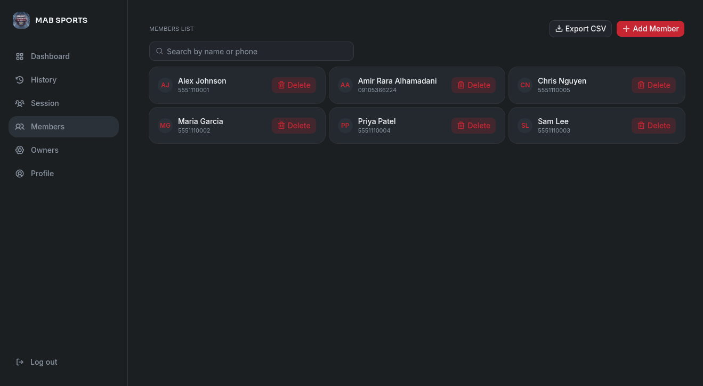
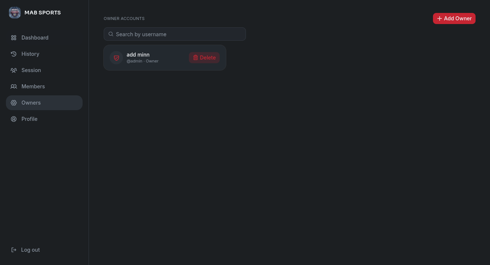
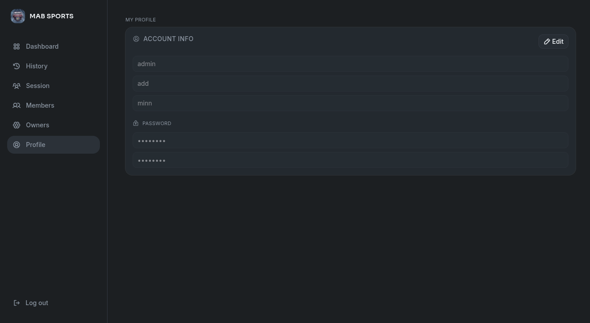
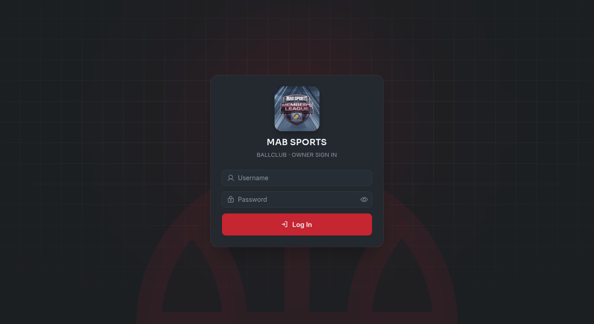
Vue 3 · FastAPI · MongoDB · Tailwind CSS · Chart.js
HOW I APPROACH THE WORK
Every design choice starts with a question. I follow those questions into schematics, source code, and experiments, then test what I think I know.
That’s how curiosity becomes engineering judgment: understanding the reason behind a design and finding a better way to build it.
LEARNING BEYOND THE CLASSROOM
Selected learning in cybersecurity and industrial systems. Each certificate opens the original document.
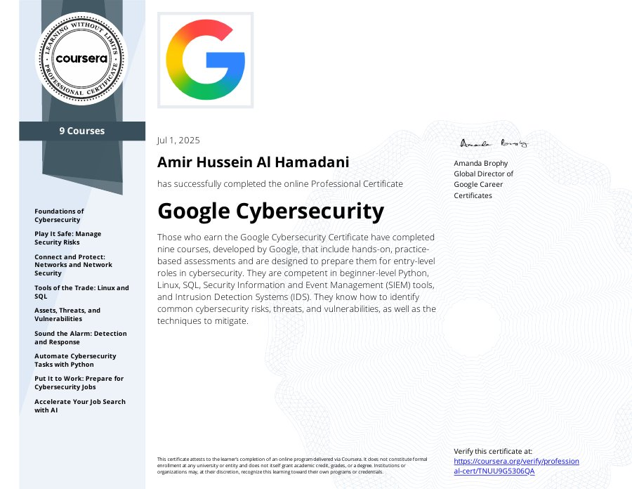
PROFESSIONAL CERTIFICATE
Google · Coursera
Completed the nine-course Google Cybersecurity program, including Python, Linux, SQL, SIEM tools, and incident detection and response.
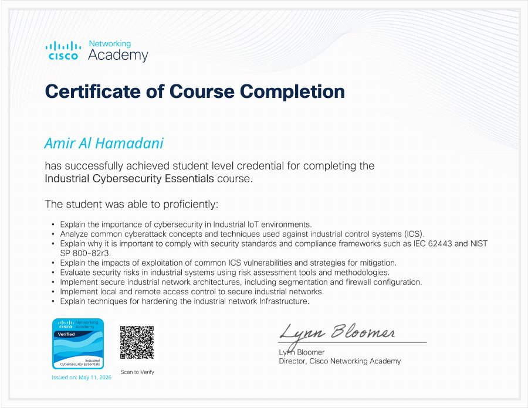
COURSE COMPLETION
Cisco Networking Academy
Completed training in Industrial IoT security, industrial control system risks, network segmentation, and access control.
WEBINAR ATTENDANCE
BlackStride Cyber
Attended a 1.5-hour webinar on foundational cybersecurity concepts.
THE FOUNDATION
2024 — 2027 EXPECTED
BS Computer Engineering
Embedded systems, microprocessors, networks and security, feedback and control, and digital signal processing.
2022 — 2024
Computer Engineering studies
Algorithms, object-oriented programming, electrical circuits, operating systems, and numerical methods.
2018 — 2020
Senior High School · STEM–IT
C/C++, Python, JavaScript, Rust, MATLAB, MicroPython, Java, Dart, PHP, Bash, Verilog.
Vue, React, Node.js, Flask, FastAPI, Django, React Native, Flutter, Tailwind CSS, MongoDB, MySQL, SQLite.
ESP32, ESP32-S3, ESP32-CAM, Raspberry Pi, Arduino Nano and Uno, Blynk, Drake, kinematics, motion planning, dynamics, control systems.
Gemini API, computer vision, TensorFlow, PyTorch, scikit-learn, SIEM, Wireshark, JWT authentication, tcpdump, Firebase Realtime Database, Vercel, Git, Arch Linux.
LET’S CONNECT
I’d be glad to talk about engineering opportunities, collaborate on a project, or exchange ideas about hardware and software.